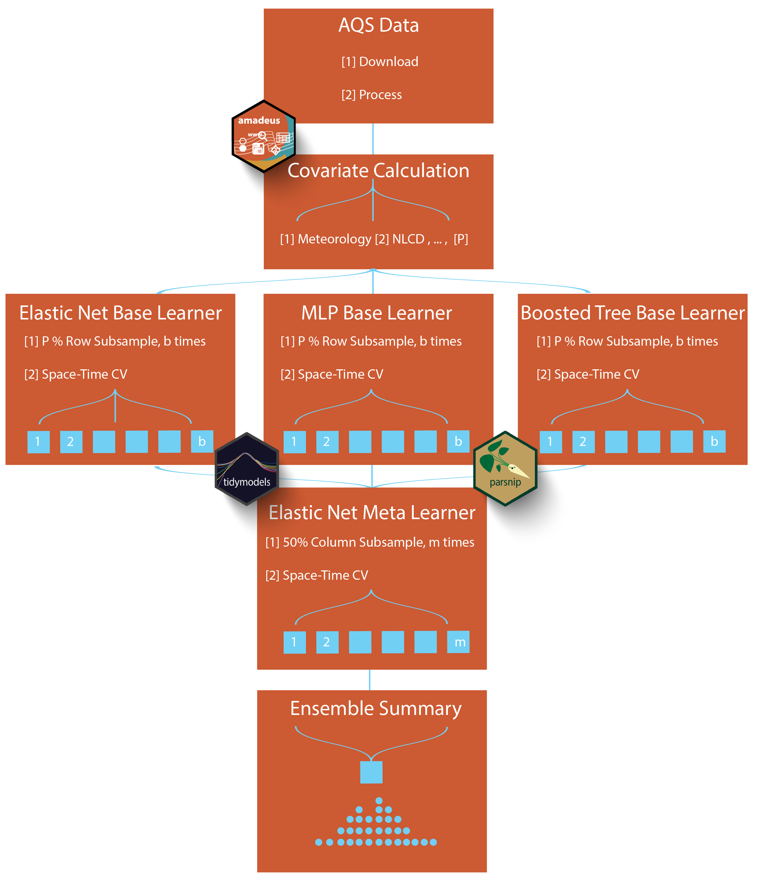

Building an Extensible, rEproducible, Test-driven, Harmonized, Open-source, Versioned, ENsemble model for air quality


Group Project for the Spatiotemporal Exposures and Toxicology group with help from friends 😃 🤠 🌎
[!WARNING] Breaking changes are in progress. Do not use this branch to build
beethoven. The Snakemake pipeline and directory structure are undergoing breaking changes. This branch remains under development and is not ready for installation or production pipeline execution.
Workflow
beethoven develops an ensemble air quality modeling workflow: download source data, calculate covariates at monitoring sites and prediction locations, fit base and meta learners, and generate predictions.
The root Snakefile loads config/config.yaml and the rules in inst/rules/; those rules dispatch R scripts from inst/scripts/ through Apptainer containers or the named beethoven Conda environment.
The default rule all targets output/grid/pred/meta/mean/db_grid_pred_meta_mean_sptmpl.qs, the path manifest for meta-learner predictions at grid sites. Its dependencies include data preparation, base and meta spatial CV and fitting, grid covariate preparation, and both grid prediction steps.
The calculation tier uses hourly AQS observations, previously downloaded GEOS-CF files, and daily HMS smoke polygons. The amadeusdb package performs SedonaDB extraction and joins, writing Parquet data with paths saved in .qs files. The modelling tier fits Spark XGBoost base and meta learners, saves native fold models, and generates out-of-fold training predictions. The prediction tier reloads those models and averages fold predictions within each repeat at grid sites.
The diagram below shows the broader ensemble design. The current fitting rules use Spark XGBoost for both base and meta learners.

beethoven workflowDirectory structure
The project combines R package functions with Snakemake rules and stage-specific scripts. The compact outline shows the current workflow files and main package directories. Pipeline configuration, rules, scripts, and containers are excluded from the built R package by .Rbuildignore; run the workflow from a repository checkout.
beethoven/
├── Snakefile # Configuration and rule includes
├── run.sh # SLURM, Apptainer, and Conda launcher
├── .github/
│ └── workflows/
├── R/ # Functions
├── config/
│ └── config.yaml # Dates, paths, grid resolution
├── inst/
│ ├── conda/
│ │ └── beethoven.yml # Geospatial and Spark environment
│ ├── devel/ # Spark development examples
│ ├── rules/
│ │ ├── a01_initiate.smk # Initialize dates and years
│ │ ├── b01_download.smk # Download hourly AQS and HMS
│ │ ├── c01_calculate.smk # Calculate monitoring-site covariates
│ │ ├── d01_model.smk # Spatial CV and Spark models
│ │ ├── e01_grid.smk # Prepare grid and covariates
│ │ └── f01_predict.smk # Predict with base and meta learners
│ └── scripts/
│ ├── a01_initiate.R # Generate dates and chunks
│ ├── b01_aqs.R # Download hourly AQS observations
│ ├── b02_narr.R # Retained NARR download script
│ ├── b03_hms.R # Download HMS smoke polygons
│ ├── c01_aqs.R # Prepare hourly monitoring-site observations
│ ├── c02_geos.R # Extract and join GEOS-CF Parquet batches
│ ├── c03_hms.R # Write HMS Parquet batches
│ ├── c99_merge.R # Merge features to Parquet
│ ├── d01_cvbase.R # Generate base spatial CV indices
│ ├── d02_base.R # Fit Spark XGBoost base learners
│ ├── d03_cvmeta.R # Generate meta spatial CV indices
│ ├── d04_meta.R # Fit Spark XGBoost meta learners
│ ├── e01_grid.R # Generate H3 grid polygons
│ ├── e02_geos.R # Extract and join grid GEOS-CF Parquet batches
│ ├── e03_hms.R # Extract grid HMS covariates
│ ├── e99_merge.R # Merge grid covariates to Parquet
│ ├── f01_base.R # Predict saved base models at grid sites
│ └── f02_meta.R # Predict saved meta models at grid sites
├── man/ # Function documentation (generated by roxygen2)
├── tests/
│ ├── testdata/ # Fixture test data
│ └── testthat/ # Unit and integration tests
└── vignettes/ # Educational material and tutorialsNaming and output policy
Workflow data artifacts use this order:
<representation>_<domain>_<role>[_<source-or-learner>][_<method>]_<extent>-
domain:trainfor monitoring-site data, including assessment sites;gridfor prediction locations. -
role:sitesfor locations,indexfor site-time rows before covariates,obsfor observed outcomes,featfor covariates, andpredfor model predictions. -
source-or-learner: a source such asaqs,geos, orhms, or a learner stage such asbaseormeta. Omit the source for the merged feature dataset. -
method: required for prediction datasets.oofmeans held-out predictions stacked across folds;meanmeans the equal-weight fold mean within each repeat. Neither method averages across repeats. -
extent:spfor spatial,tmplfor temporal intermediates, andsptmplfor spatiotemporal data. -
representation:sf,df,dt, andmatidentify in-memory structures;tblidentifies a lazy table.dbidentifies a path or vector of paths to an on-disk dataset.chr,int, andlistidentify metadata or collections. Intermediate objects may add descriptive qualifiers before the extent.
grid identifies the locations; pred identifies model-generated values. Covariates at grid sites use grid_feat, and predictions at those sites use grid_pred. Keep the R artifact name, Snakemake input/output key, and serialized filename stem identical. When a script converts representations, change only the representation prefix, for example dt_grid_index_sptmpl written to db_grid_index_sptmpl.parquet.
A db_*.qs file contains Parquet paths, not the dataset itself. Prediction manifests sit alongside a data/ subdirectory; Spark overwrites only data/. Model metadata retain list_base_xgb_model and list_meta_xgb_model, containing the fold index, ordered predictor names, outcome, and learner stage. Native model files retain rset_NNN_fold_NN.ubj. Prediction columns retain base_NNN and meta_NNN in both training and grid datasets so saved models receive the expected features.
CV artifacts use list_<learner>_cv_idx and list_base_params_static; evaluation artifacts use dt_<learner>_xgb_eval. Initialization and download metadata retain their *_init_* and list_dl_* names because they are shared across domains.
output/
├── init/ # Dates, years, and date chunks
├── download/ # Download manifests; source files remain in input/
├── train/
│ ├── sites/ # sf_train_sites_sp.qs
│ ├── obs/ # db_train_obs_aqs_sptmpl.parquet
│ ├── feat/ # db_train_feat[_<source>]_sptmpl.qs
│ │ ├── geos/ # GEOS batches and join/ data
│ │ ├── hms/ # HMS batches
│ │ └── merge/ # Joined training Parquet data
│ └── pred/
│ ├── base/oof/ # db_train_pred_base_oof_sptmpl.qs and data/
│ └── meta/oof/ # db_train_pred_meta_oof_sptmpl.qs and data/
├── grid/
│ ├── sites/ # sf_grid_sites_sp.qs
│ ├── index/ # db_grid_index_sptmpl.parquet
│ ├── feat/ # db_grid_feat[_<source>]_sptmpl.qs
│ │ ├── geos/ # GEOS batches and join/ data
│ │ ├── hms/ # HMS batches
│ │ └── merge/ # Joined grid Parquet data
│ └── pred/
│ ├── base/mean/ # db_grid_pred_base_mean_sptmpl.qs and data/
│ └── meta/mean/ # db_grid_pred_meta_mean_sptmpl.qs and data/
├── model/{base,meta}/ # Native .ubj models and list_*_xgb_model.qs
├── cv/{base,meta}/ # CV indices; shared parameters in cv/base/
└── eval/{base,meta}/ # Evaluation tablesUse prepare_<domain>_<role>[_<source>] for data-preparation rules, prepare_<learner>_cv for CV, fit_<learner> for fitting, and predict_grid_<learner> for grid prediction. The script prefixes a through f continue to identify workflow stages. The workspace devel.R uses the same artifact names and a corresponding layout under ../test/ for its separate fitting outputs. Archived workflows and standalone historical experiments are outside this naming policy.
Pipeline
| Tier | Script prefix | Rules | Principal outputs |
|---|---|---|---|
| initiate | a |
initiate |
Date and year objects under output/init/. |
| download | b |
download_aqs, download_hms
|
Download manifests under output/download/. |
| train | c |
prepare_train_obs_aqs |
Monitoring locations under output/train/sites/ and observations under output/train/obs/. |
| train | c |
prepare_train_feat_geos, prepare_train_feat_hms
|
Source covariates and path manifests under output/train/feat/. |
| train | c |
prepare_train_feat |
output/train/feat/db_train_feat_sptmpl.qs, referencing output/train/feat/merge/. |
| model | d |
prepare_base_cv, prepare_meta_cv
|
CV indices under output/cv/{base,meta}/; shared parameters under output/cv/base/. |
| model | d |
fit_base, fit_meta
|
OOF predictions under output/train/pred/{base,meta}/oof/, models under output/model/{base,meta}/, and metrics under output/eval/{base,meta}/. |
| grid | e |
prepare_grid_sites |
H3 polygons under output/grid/sites/ and site-time rows under output/grid/index/. |
| grid | e |
prepare_grid_feat_geos, prepare_grid_feat_hms
|
Source covariates and path manifests under output/grid/feat/. |
| grid | e |
prepare_grid_feat |
output/grid/feat/db_grid_feat_sptmpl.qs, referencing output/grid/feat/merge/. |
| predict | f |
predict_grid_base |
output/grid/pred/base/mean/db_grid_pred_base_mean_sptmpl.qs. |
| predict | f |
predict_grid_meta |
output/grid/pred/meta/mean/db_grid_pred_meta_mean_sptmpl.qs, the default endpoint. |
Initialization supplies dates and years to the download and preparation rules. Both GEOS scripts select the first ten configured variables, use batches of up to 240 files, and join variables by site_id, time, and level. HMS uses batches of up to 50 files. The feature merges pass GEOS as hourly data and HMS as daily data to amadeusdb::join_covariates().
GEOS-CF files must already exist: there is no GEOS download rule. input/.hidden/chr_group_store.txt supplies the storage root, with data beneath input/geos/<asset>/. Both domains load the Conda environment’s libgdal.so.39 before extraction. Rules declare the .qs path manifests; referenced batch Parquet and native model files are written by the scripts without separate output declarations.
b02_narr.R remains without a corresponding download or calculation rule. Grid generation uses the North Carolina county example bundled with sf, storing H3 cell IDs as site_id at the configured resolution. It still declares and reads the merged training-feature manifest, although grid construction does not use its contents. The naming migration preserves that dependency and the existing computational behavior.
Spark modelling
d01_cvbase.R loads the merged training-data paths and inspects the Parquet schema through SedonaDB. It sets Sample_Measurement as the outcome and excludes the outcome, site_id, time, and level from predictors.
Both CV scripts project monitoring locations to CRS 5070 and use five spatial folds, square 100,000-meter cells, and a 50,000-meter buffer. Repeat counts come from int_base_iter and int_meta_iter. The saved indices contain analysis and assessment site_id values by repeat and fold; Spark selects all available times for those sites.
The fitting and prediction scripts source R/spark.R. fit_xgb_spark() fits one model per repeat and fold, saves its native booster under output/model/<learner>/, and predicts assessment sites. Fold predictions are stacked by row within each repeat; repeat columns are joined into one OOF dataset. Base OOF columns, together with lon and lat, are the meta-learner predictors. The returned list contains prediction paths, metrics, and model metadata, saved separately by the scripts.
predict_xgb_spark() reloads the native fold models and assembles predictors in the saved order. It averages fold predictions within each repeat, retaining one base_NNN or meta_NNN column per repeat. Base grid predictions feed the meta grid prediction step. Feature assembly uses dense vectors to preserve explicit zeros. Grid prediction does not require the outcome column and ignores the optional fitting row limit.
All four fitting/prediction scripts read input/.hidden/chr_spark_local.txt and input/.hidden/chr_spark_home.txt to connect to an existing Spark cluster; run.sh does not start it. XGBOOST_JARS, when set, supplies JAR paths; otherwise Spark requests XGBOOST_MAVEN_PACKAGE.
| Spark setting | Current value or default | Use |
|---|---|---|
SPARK_CORES_MAX |
64 by default; both fitting scripts set 128
|
Maximum cores requested for the Spark application. |
SPARK_EXECUTOR_CORES |
2 |
Executor cores, read by the shared helper. |
SPARK_EXECUTOR_MEMORY |
2g by default; base script sets 8g, meta script sets 4g
|
Memory per executor. |
SPARK_SHUFFLE_PARTITIONS |
32 |
Spark SQL shuffle partitions. |
XGB_NUM_WORKERS |
Maximum cores divided by executor cores, rounded down, with a minimum of 1 | XGBoost workers; defaults to 64 with the fitting scripts’ 128 cores and 2 cores per executor. |
XGB_NTHREAD |
Executor cores (2 by default) |
Threads per XGBoost worker; also sets spark.task.cpus. |
XGBOOST_MAVEN_PACKAGE |
ml.dmlc:xgboost4j-spark_2.13:3.4.0 |
Package requested when XGBOOST_JARS is unset. |
XGB_NUM_ROUND |
50 |
Boosting rounds per fold fit. |
XGB_SEED |
20260904 |
XGBoost estimator seed; it is not passed to the spatial CV generators. |
XGB_MAX_ROWS |
0 |
Optional SQL row limit; zero uses all rows. |
spark_environment() reads the settings into a list used explicitly by fit_xgb_spark(). Worker and thread overrides are applied to the estimator. Validation requires executor cores not to exceed maximum cores, threads per worker not to exceed executor cores, and workers times threads not to exceed maximum cores. The objective is reg:squarederror, evaluation metric is rmse, tree method is hist, maximum depth is 8, learning rate is 0.1, and row/column sampling fractions are 0.8. The stored normalize and metric fields in the common parameter list are not passed into this helper.
Configuration and execution
| Setting | Current value | Use |
|---|---|---|
chr_config_daterange |
2018-01-01 through 2019-12-31
|
Inclusive dates for downloading and processing data. |
chr_config_dir |
beethoven/beethoven/input/ |
AQS/HMS download directory, resolved relative to $HOME by the rules. GEOS-CF uses the separate shared-storage path described above. |
int_config_radii |
1000, 5000, 10000
|
Configured buffer radii in meters; not consumed by the current rules. HMS monitoring-site calculation explicitly passes radius = 0. |
int_grid_res |
5 |
H3 resolution for grid preparation. |
int_base_iter |
25 |
Number of repeated spatial CV partitions for base learners. |
int_meta_iter |
10 |
Number of repeated spatial CV partitions for meta learners. |
run.sh enables both --use-apptainer and --use-conda. Snakemake dispatches scripts through the environment declared by each rule:
| Execution environment | Rules |
|---|---|
inst/container/sif/container_covariates.sif |
initiate, download_aqs, and download_hms. |
Named Conda environment beethoven
|
All prepare_*, fit_*, and predict_grid_* rules. |
The Conda rules name an existing environment rather than a YAML file for automatic creation. inst/conda/beethoven.yml records R 4.6, Java 17, native geospatial libraries, and build tools, with notes for manual R package installation. The scripts require the corresponding R packages, including amadeus, amadeusdb, beethoven, sedonadb, arrow, qs2, spatialsample, sparklyr, and DBI. HMS downloading also requires mirai; grid generation requires h3jsr.
The container definitions and build scripts remain under inst/container/def/ and inst/container/sh/. Both main definitions install beethoven from NIEHS/beethoven@mm-1013, sparklyr, Spark, and arrow. The covariates definition installs amadeus from NIEHS/amadeus@mm-aqs-1019 for hourly AQS support. The models image includes CUDA support; current Spark fitting specifies the CPU.
run.sh requests one SLURM allocation on the geo partition with 20 CPUs and 250 GB of memory. Logs are written to slurm/beethoven_<jobid>.out and .err. The Snakemake core limit comes from the first script argument, then SLURM_CPUS_PER_TASK, then a fallback of 1. The launcher does not request GPUs or pass --nv. Spark fitting connects from this allocation to the separately configured cluster, whose executor settings are independent of the launcher allocation.
The HMS download script starts 100 local mirai workers; the unused NARR download script starts 50. Both source the download helpers in R/amadeus.R. No current calculation or grid script calls calculate_narr_mirai() or calculate_hms_map(): the GEOS/HMS extraction scripts use amadeusdb and do not start mirai pools. Spatial CV preparation and Spark fitting also do not start mirai pools. The download rules declare no thread resources corresponding to those local pools, so their sizes must be accounted for separately from Snakemake’s core limit. Inputs, outputs, runtime state, logs, Spark warehouse files, and container images are ignored by Git.
Contribution
To contribute developments or modifications, open a Pull request into the main branch with a detailed description of the proposed changes. Pull requests must pass all status checks, and then will be approved or rejected by beethoven’s authors.
Utilize Issues to notify the authors of bugs, questions, or recommendations. Identify each issue with the appropriate label to help ensure a timely response.